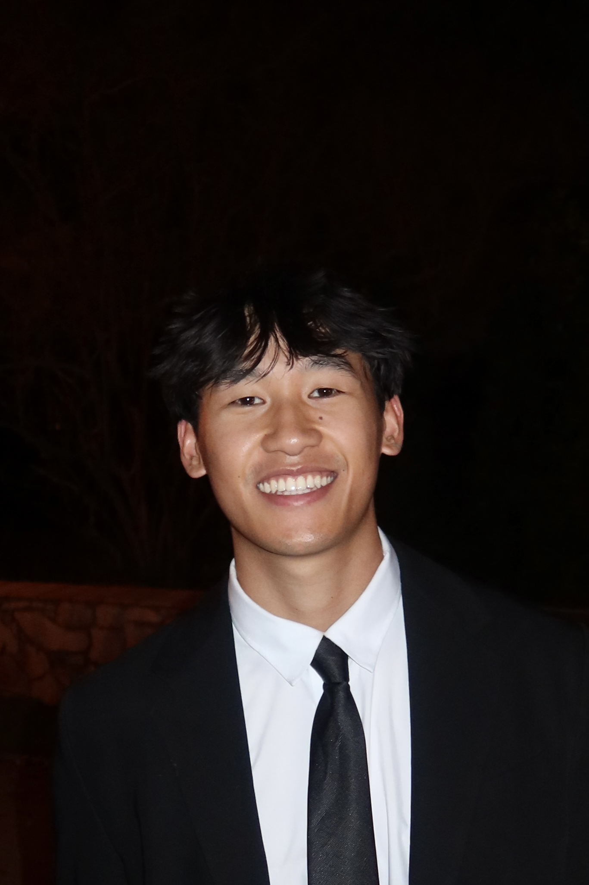

Principal Investigator

Jordan Conwell
Principal Investigator
Associate Professor, Department of Sociology, The University of Texas at Austin.
Postdoctoral Researcher
Jane Furey
Postdoctoral Researcher
PhD Students
Cameron Rua-Smith
PhD Student
Undergraduate Researchers
Carly May
Undergraduate Research Assistant
Carly recently graduated from The University of Texas at Austin with a Bachelor's degree in Sociology and a minor in Educational Psychology. Entering her third year on the College-to-Career research team, she now serves as the Undergraduate Team Lead. After beginning college in 2014 and returning in 2024 to pursue sociology, she brings a renewed commitment to advancing equity in education and strengthening family support systems. This fall, she will begin a Master's program in Human Development, Culture, and Learning Sciences. Her research interests focus on education policy, parent involvement, and reducing systemic inequalities in access to educational resources.
Katy Doncer
Undergraduate Research Assistant

Michael Dinh
Undergraduate Research Assistant
Michael Dinh is a senior at The University of Texas at Austin pursuing a Bachelor of Science in Psychology and is expected to graduate in Fall 2026. As an undergraduate researcher with the College-to-Career Team, his work focuses on survey development, website design, data analysis, and creating resources that support students' career readiness. After graduation, he is hoping to attend dental school, where he aims to combine his interests in healthcare, education, and community service to improve access to oral healthcare while continuing his commitment to mentorship and community outreach.
Grant Andrew Lindberg
Undergraduate Research Assistant
Alumni
Name
Name
Name
Name